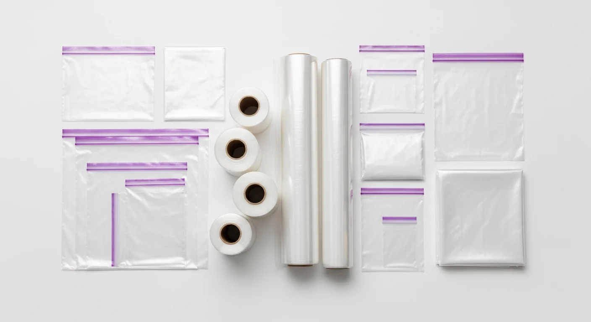

キッチンの食品保存用品を統一感のあるグリッドレイアウトで配置した俯瞰図。透明容器や白・ベージュを基調とした色使いで、機能的かつ落ち着いた雰囲気を演出。整理整頓後の清潔感と実用性を同時に表現した構成。 整理整頓、生活雑貨をテーマにしたブログのアイキャッチ、SNS投稿、動画サムネイル、資料作成に使いやすいよう、軽量なWebP形式で配布しています。 ソザイノ編集部がAI生成後に用途、見た目、カテゴリ適合性を確認し、無料・商用利用可能な素材として掲載しています。
この素材をダウンロード（無料）キッチンの食品保存用品を統一感のあるグリッドレイアウトで配置した俯瞰図。透明容器や白・ベージュを基調とした色使いで、機能的かつ落ち着いた雰囲気を演出。整理整頓後の清潔感と実用性を同時に表現した構成。
背景が扱いやすく、ブログのアイキャッチ・YouTubeのサムネイル・SNS投稿など、さまざまな場面で使いやすい構図に仕上がっています。ファイル形式は軽量なWebPで配信しているため、ページの読み込み速度を損なわずに設置できます。
記事のアイキャッチとして使う場合は、1200×630pxのサイズでそのまま設置できます。「キッチン収納やシンプルライフをテーマにしたブログ記事のアイキャッチに最適。清潔感のあるフラットレイ構成は、整理整頓のビジュアルイメージを強く印象付けられます。」のような記事と相性がよく、記事の冒頭やSNSシェア時のOGP画像として読者の目を引きます。
サムネイルの背景として使う場合は、画像の余白部分に大きめのテロップを重ねると視認性が高まります。「整理整頓」を扱う動画の背景に使うと、内容が一目で伝わるサムネイルになります。
Instagramでは正方形（1:1）にトリミングして投稿、Xではそのまま横長で投稿すると収まりがよいです。投稿文のテーマと画像の整理整頓を合わせることで、タイムラインでの訴求力が上がります。
Canvaに読み込んでテキストを重ねる場合は、容器の透明度や素材感を活かした奥行き感の表現。フィルターで明るさを少し上げると、文字とのコントラストが取りやすくなります。
文字を載せる場合は、画像の端から10〜15%程度の余白を確保すると、SNSシェア時にトリミングされても文字が切れにくくなります。被写体と文字が重ならない位置を選ぶと、どちらも引き立ちます。
この素材は、ソザイノ編集部がAIで生成した候補の中から「整理整頓」をテーマにした画像として、構図のわかりやすさ・色味の自然さ・用途の広さを基準に選定しました。AI生成後に不自然な描写や破綻がないかを目視で確認し、ブログのアイキャッチやSNS投稿でそのまま使える品質であることを確認しています。